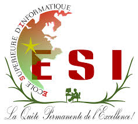

Ecole Supérieure d'Informatique
Université de Bobo-Dioulasso

Ouverte à la rentrée 1990-1991 à Ouagadougou, l'Ecole Supérieure d'Informatique (ESI) est le premier établissement public d'enseignement supérieur en informatique du Burkina Faso. Dans un monde où la technologie s'est implantée dans toutes les activités humaines, l'ESI se charge de mettre à la disposition des étudiants la meilleure façon qui puisse exister afin de booster le BURKINA FASO au sommet du développement et d'une révolution totale et réelle. L'ESI c'est bien plus qu'une école informatique. C'est un tremplin vers l'excellence. Ici on ne se contente pas d'apprendre à coder : on apprend à concevoir des solutions innovantes, à travailler en équipe comme dans le monde professionnel, et à devenir des ingénieurs complets, recherchés dès la sortie. Les débouchés sont nombreux (cybersécurité, data science, IA, développement…), le niveau est exigeant et l'ambiance entre étudiants est fraternelle et solidaire. Si vous voulez allier passion pour la technologie et avenir prometteur, ESI est le bon choix après le BAC !!!
Bienvenue dans l'univers de la programmation et du réseaux — là où les élites émergent.